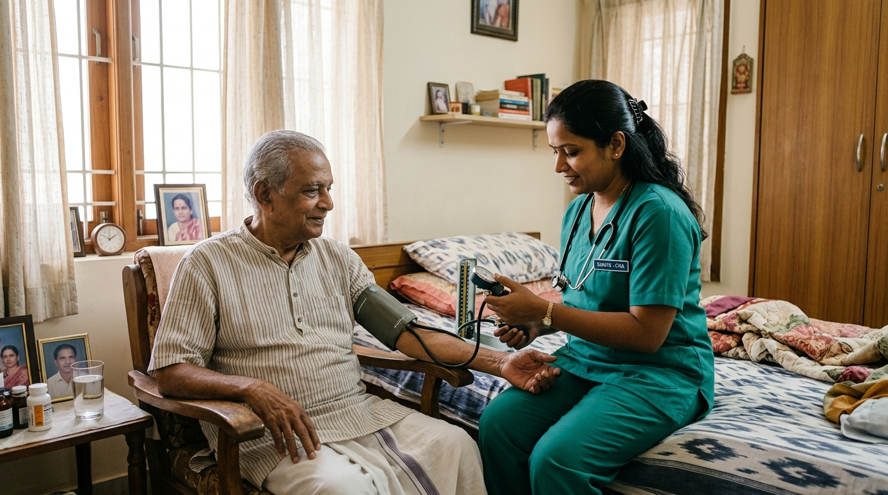

Skilled Bedside Support, Right at Home
Trained nursing assistants for medical monitoring, medication support, and post-surgery recovery care — without leaving home.

Clinical care at home, priced transparently.
Both plans include a background-verified nursing assistant matched to your patient's specific medical requirements.
12 Hours Care
12hrsSuitable for planned short-duration support
- Bedside monitoring & patient observation
- Medication support under guidance
- Vitals tracking (BP, sugar, temperature)
- Hygiene & mobility assistance
- Post-hospital recovery support
24 Hours Care
24hrsRound-the-clock patient monitoring
- Everything in 12-hour plan
- Continuous vitals tracking
- Overnight monitoring & safety
- Regular family updates on patient status
- Uninterrupted bedside presence
Clinical skill meets home-side warmth.
Trained in Bedside Patient Care
Our nursing assistants are trained specifically for home-based patient support — monitoring vitals, handling recovery routines, and communicating any changes to the family immediately.
Background-Verified Staff
Every nursing assistant is verified through identity, address, and reference checks before deployment. You receive staff you can trust in your home with your loved one.
24-Hour Replacement Guarantee
If for any reason you're not satisfied, we replace your nursing assistant within 24 hours. No delay, no excuses — your patient's care is never disrupted.
Care Aligned With Doctor's Instructions
We work alongside your treating physician's care plan, ensuring our nursing assistants follow prescribed routines and communicate anything unusual without delay.
Comprehensive bedside support, every shift.
Vitals Monitoring
Regular tracking of BP, blood sugar, temperature, and SpO2 — documented and reported to family.
Medication Administration Support
Ensuring medications are given on time, in the right dose, as directed by the doctor.
Wound & Catheter Care Assistance
Basic dressing support and catheter care under the family's or doctor's guidance.
Mobility & Positioning Support
Safe turning and repositioning to prevent bedsores in bedridden patients.
Hygiene Assistance
Daily bathing, grooming, and personal hygiene care maintaining patient dignity throughout.
Coordination With Family Doctor
Communicating observations and updates to the treating physician or family as required.
Simple steps. Care starts within 24 hours.
Call or WhatsApp Us
Reach out directly to our care manager. Tell us what you need and we'll listen — no forms, no call centre queues.
We Match a Verified Attendant Within 24 Hours
We identify the right caretaker from our verified pool and confirm before sending anyone. You always know who is coming.
Care Begins at Your Home
Your attendant arrives and our care manager stays in touch to ensure everything is going smoothly.